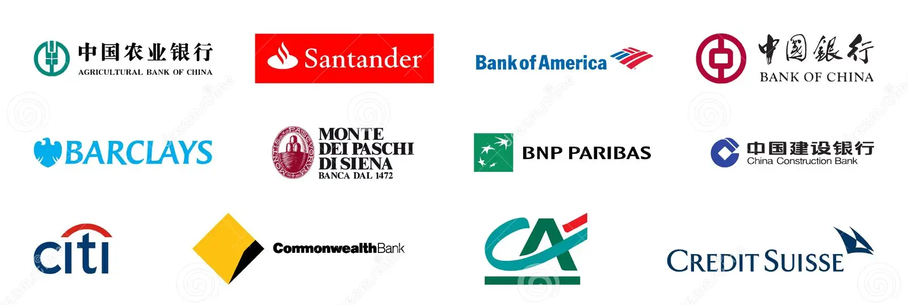

Learn & Hire
Level up your skills to industry standards and become a tech pro!
courses
Goo Business offers multiple trending courses
web Developement
Elevate your digital journey with our dynamic web development courses! Whether you're a coding enthusiast or just starting, our expert-guided programs provide a roadmap to master the art of web creation. From crafting responsive designs to building robust applications, embark on a transformative learning experience and shape the future of the web with us.
Graphic Designer
Unleash the power of visual storytelling in our graphic design courses! Dive into a world of color, composition, and creativity as we guide you through the nuances of design aesthetics. Whether you're a budding artist or a seasoned pro, our courses cater to all levels, fostering innovation and originality. Join us on a visual adventure, where your imagination knows no bounds
Data Science
Elevate your digital journey with our dynamic web development courses! Whether you're a coding enthusiast or just starting, our expert-guided programs provide a roadmap to master the art of web creation. From crafting responsive designs to building robust applications, embark on a transformative learning experience and shape the future of the web with us.
Data Analyst
Unleash the power of visual storytelling in our graphic design courses! Dive into a world of color, composition, and creativity as we guide you through the nuances of design aesthetics. Whether you're a budding artist or a seasoned pro, our courses cater to all levels, fostering innovation and originality. Join us on a visual adventure, where your imagination knows no bounds
Employment Opportunity
Successful Completion of our courses opens the door to exciting career opportunities with in our company.our top performers have the chance to join our team and work on cutting-edge projects alongside seasoned professionals
At goo business, we value talent and dedication. That's ehy we prioritize hiring from within our pool of course graduates. if you perform well and demonstrate your skills, yourself eith a rewarding career right here with us
Our sights are set on international growth and establishing a global presence. Our primary focus is on cultivating a highly competent and cohesive team. We believe that anyone, regardless of their financial means or educational background, possesses the potential to contribute significantly.

Our Mission
We are a burgeoning startup with a global vision.
We are committed to eliminating financial barriers, ensuring that individuals with limited resources can actively participate in our mission to make a positive impact.
Our company provides an excellent entry point for fresh talent to enter the professional arena.
We are dedicated to ensuring not just the completion of syllabi but instilling a practical understanding - our team members should be adept at applying what they learn.
For us, it's not just about completing a syllabus; it's about instilling a mindset where knowledge is applied and contributes meaningfully. This philosophy defines our company's mission, where each individual, regardless of their background, has the opportunity to not only learn but also actively contribute to our collective goals.
Our Co-Pertners
companys can hire you after success full completing course
